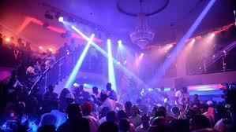
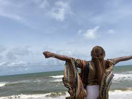

NIGHT LIFE: Lagos' nightlife is vibrant and diverse, offering everything from high-end clubs to laid-back beach bars. Popular spots include Quilox, known for its luxury and energy, and Vaniti, praised for its chic ambiance and sound system. Expect a mix of Afrobeat, international hits, and a generally lively atmosphere. PAINTBALLING: Paintballing in Lagos is a popular and fun activity for team bonding, family outings, and friends. You can find paintball arenas in various locations, including Lekki and Landmark Beach. Leisure Sports Paintball offers various packages and is open on weekends. Kampari Tours also offers paintballing experiences in Lekki Phase 1 and Victoria Island.

BEACH FEELS: Lagos has several popular beaches for outings, offering a range of experiences from lively and bustling to serene and secluded. Some popular options include Elegushi Beach, Tarkwa Bay, and Ilashe Beach. You can also find beach resorts and private beaches like Oniru Private Beach and La Campagne Tropicana Beach Resort.